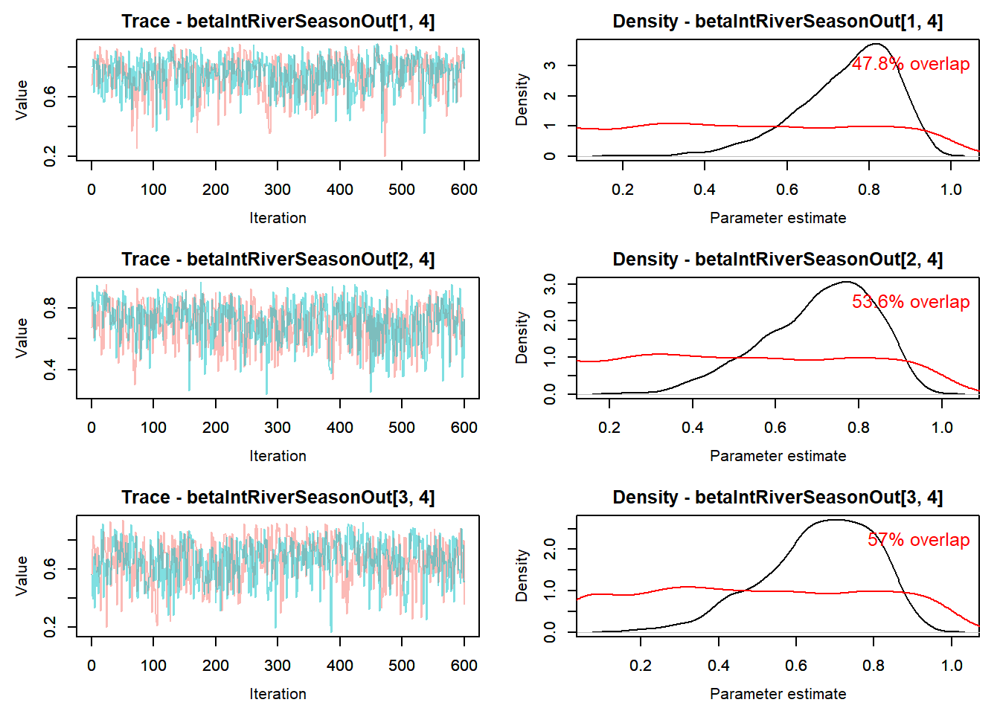
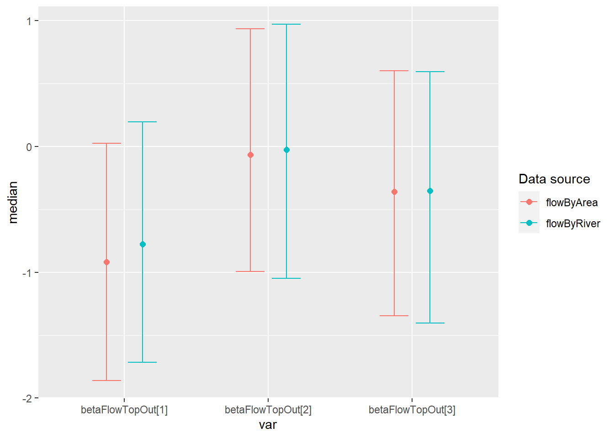
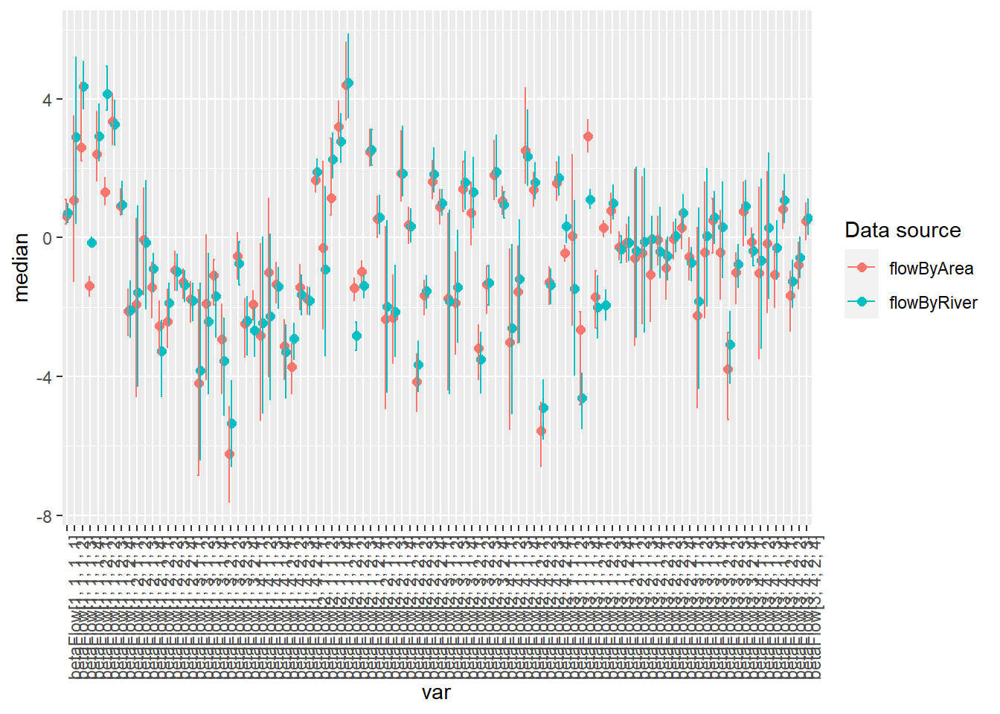
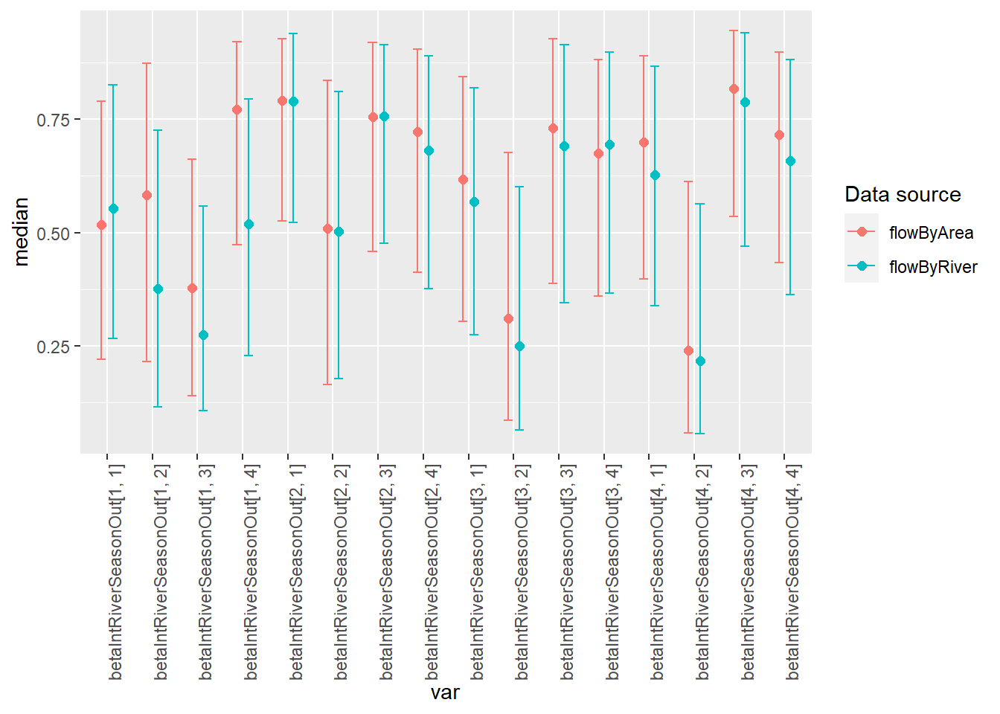
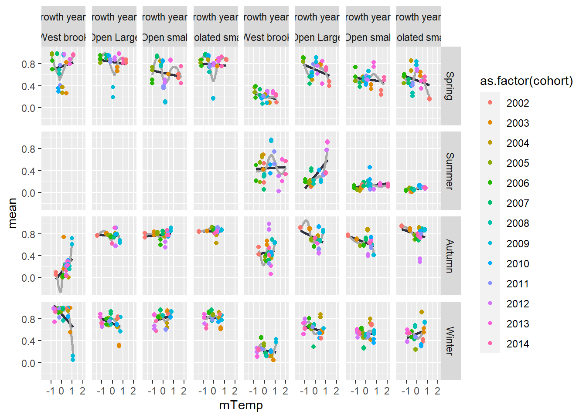
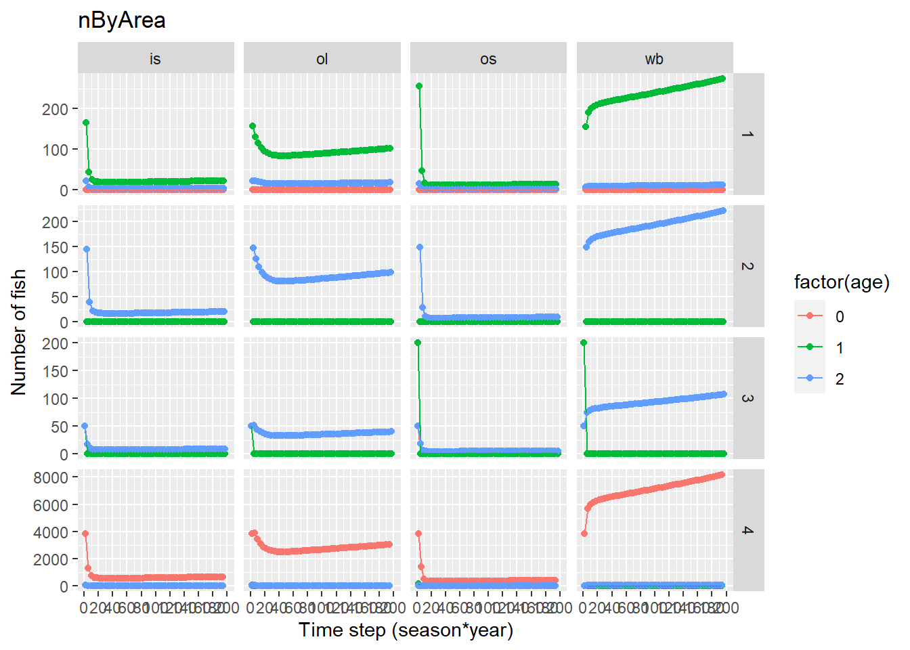
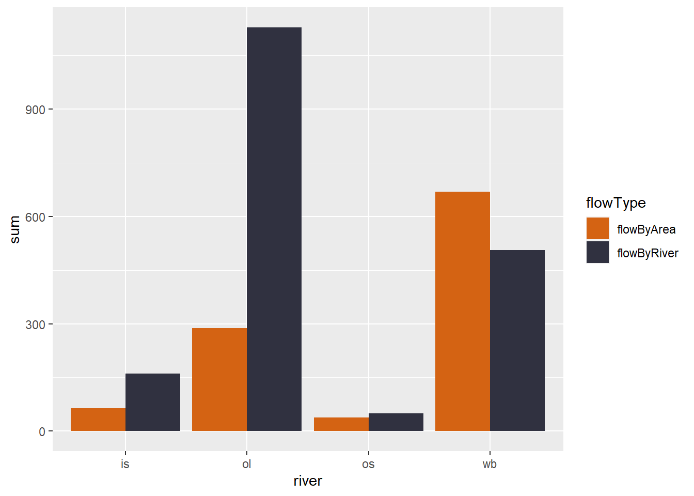

15 Flow/survival models - 4 rivers
This is a ‘fork’ of modelsCMR_ft_cohort_Flow_OB.qmd where the models were originally worked out. following Daniel’s march 2023 changes, Ben adapted the …_OB file to this …_WB file.
As of 3/13/23 - Following trouble getting the models to run on workbench (runs timed out) and on a laptop with targets (broken into targets ./R/hold/modelCMR_ttt_ft_cohort_WB.R - get error following Rmodel step, run with a function ./R/hold/modelCMR_ttt_ft_cohort_WB_usingFunction.R - did not finish [seems like targets is interrupting fitting somehow…]), now models are run using a function (run_ttt_model() in ./models/cmrFlowWB/modelCMR_ttt_ft_cohort_WB_functionsToSource.R) and saved to a file in ./models/cmrFlowWB/runsOut/modx/. Targets will read in the files for analysis using modelCMR_ttt_WB.R.
File names are ttt_WB_mcmc_modx.csv and the targets are mcmcOutModx.
Summary
File to run models: wbBook_quarto_targets/models/cmrFlowWB/modelCMR_ttt_ft_cohort_WB_makeFile.R ->
Model running functions:
wbBook_quarto_targets/models/cmrFlowWB/modelCMR_ttt_ft_cohort_WB_functionsToSource.R ->
File to add model output to target:
wbBook_quarto_targets/R/modelCMR_ttt_WB.R
will need to update this section of text Probability of survival (phi) model structure:
logit(phi[t,i]) <-
betaInt[ isYOY[i,t],season[t],cohort[i]] +
betaFlow[1,isYOY[i,t],season[t]] * flow[i,t] +
betaFlow[2,isYOY[i,t],season[t]] * temp[i,t] +
betaFlow[3,isYOY[i,t],season[t]] * temp[i,t] * flow[i,t]
Probability of capture (p) model structure:
logit(p[t,i]) <- betaP[isYOY[i,t],season[t-1],cohort[i]]
The goal of this modelling exercise is to evaluate the effect of new tributary-specific stream flow estimates on survival of brook trout. Here, we compare survival within one tributary (O’Bear Brook) with flow input data as 1) single flow estimate for all locations (historical approach) and 2) hindcasted flows for each tributary based on new tributary-specific flows which are available since 2000.
The goal is to compare survival estimates with tributary-specific flow to estimates with common flow across locations.
Note: a model without cohort structure is here modelsCMR_ft_Flow_OB.qmd but is not included because results are similar but without the cohort estimates.
Structure options include [species, cohort, season, isYOY, flow, flow^2]
Model naming mod1 = ttt_fByAreaT_cohort_WB mod2 = ttt_fByRiverT_cohort_WB
15.1 Load data
Code
# byArea
load(paste0('./models/cmrFlowWB/runsOut/mod', 1, '/ttt_WB_mod', 1, '_mostRecent.RData'))
out_flowByArea <- d
summary_flowByArea <- MCMCsummary(object = out_flowByArea$mcmc, round = 3) %>%
mutate(flowData = "flowByArea") %>%
rownames_to_column(var = "var")
# byRiver
load(paste0('./models/cmrFlowWB/runsOut/mod', 2, '/ttt_WB_mod', 2, '_mostRecent.RData'))
out_flowByRiver <- d
summary_flowByRiver <- MCMCsummary(object = out_flowByRiver$mcmc, round = 3) %>%
mutate(flowData = "flowByRiver") %>%
rownames_to_column(var = "var")
# combined
both <- bind_rows(summary_flowByArea, summary_flowByRiver) %>%
rename(lo = '2.5%', hi = '97.5%', median = '50%') 15.2 Nimble models
15.2.1 Model with original flow data
Cohort-dependent estimates of phi and p with flow and temperature hierarchical effects
15.2.1.1 Retrieve model results
Model is run using this file wbBook_quarto_targets/models/cmrFlowWB/modelCMR_ttt_ft_cohort_WB_makeFile.R
Code
# Following https://oliviergimenez.github.io/bayesian-cr-workshop/worksheets/4_demo.html
#
#out_flow <- tar_read(toSave_ttt_WB_target)
# out_flow_target <- tar_read(toSave_ttt_WB_target)
# load(paste0('./models/cmrFlowWB/runsOut/mod', 1, '/ttt_WB_mod', 1, '_mostRecent.RData'))
# out_flowByArea <- d
#out_flow <- read.csv( paste0('./models/cmrFlowWB/runsOut/mod', modelNum, '/ttt_WB_mcmc_mod', modelNum,'_chains12.csv'))
MCMCplot(object = out_flowByArea$mcmc)
Code
# summary_flowByArea <- MCMCsummary(object = out_flowByArea$mcmc, round = 3) %>%
# mutate(flowData = "flowByArea") %>%
# rownames_to_column(var = "var")
#summary_flowByArea %>% filter(grepl("phi", var))
#summary_flowByArea %>% filter(grepl("betaPhiYOYSeason", var))
#summary_flowByArea %>% filter(grepl("betaFlow", var))
#summary_flowByArea %>% filter(grepl("betaInt", var))
# parametersToSave <- c( "betaIntOut", "betaIntRiverYOYSeasonOut", "betaIntRiverSeasonOut", "betaIntRiverOut", "betaIntTopOut",
# "betaFlowOut", "betaFlowRiverOut", "betaFlowTopOut",
# "betaInt", "betaFlow",
# "betaPOut",
# "psi"
# )
priors <- runif(out_flowByArea$nIter * out_flowByArea$nChains, 0, 1)
MCMCtrace(object = out_flowByArea$mcmc,
#ISB = FALSE,
#exact = TRUE,
params = c(
"betaIntRiverSeasonOut"#, "betaPhiYOYSeason","betaPYOYSeason"
# "betaIntTop", "betaPhiTop","betaFlowTop","betaPTop"
# "betaInt", "betaPhi","betaFlow","betaP",
# "betaIntOut", "betaPhiOut","betaFlowOut","betaPOut"
),
pdf = FALSE,
priors = priors)




Code
MCMCtrace(object = out_flowByArea$mcmc,
#ISB = FALSE,
#exact = TRUE,
params = c(
"betaFlowRiverOut"
# "betaIntYOY", "betaPhiYOY","betaFlowYOY","betaPYOY"
# "betaInt", "betaPhi","betaFlow","betaP",
# "betaIntOut", "betaPhiOut","betaFlowOut","betaPOut"
),
pdf = FALSE,
priors = priors)


15.2.2 Model with flow data hindcast for each river
Cohort-dependent estimates of phi and p with flowByRiver hierarchical effects
15.2.2.1 Retrieve model results
Model is run using this file wbBook_quarto_targets/models/cmrFlowWB/modelCMR_ttt_ft_cohort_WB_makeFile.R
Code
# Following https://oliviergimenez.github.io/bayesian-cr-workshop/worksheets/4_demo.html
#
#out_flowByRiver <- tar_read(mcmcOutMod2)
# load(paste0('./models/cmrFlowWB/runsOut/mod', 2, '/ttt_WB_mod', 2, '_mostRecent.RData'))
# out_flowByRiver <- d
#
MCMCplot(object = out_flowByRiver$mcmc)
Code
# summary_flowByRiver <- MCMCsummary(object = out_flowByRiver$mcmc, round = 3) %>%
# mutate(flowData = "flowByRiver") %>%
# rownames_to_column(var = "var")
#summary_flowByRiver %>% filter(grepl("betaIntYOYSeason", var))
#summary_flowByRiver %>% filter(grepl("betaPhiYOYSeason", var))
#summary_flowByRiver %>% filter(grepl("betaFlow", var))
priors <- runif(out_flowByRiver$nIter * out_flowByRiver$nChains, 0, 1)
MCMCtrace(object = out_flowByRiver$mcmc,
#ISB = FALSE,
#exact = TRUE,
params = c(
"betaIntRiverSeasonOut"#, "betaPhiYOY","betaFlowYOY","betaPYOY"
),
pdf = FALSE,
priors = priors)


Code
# MCMCtrace(object = out_flowByRiver$mcmc,
# #ISB = FALSE,
# #exact = TRUE,
# params = c("betaInt"),
# pdf = FALSE,
# priors = priors)15.2.3 Compare parameter estimates of models with flowByArea and flowByRiver
Code
# both <- bind_rows(summary_flowByArea, summary_flowByRiver) %>%
# rename(lo = '2.5%', hi = '97.5%', median = '50%')
# mutate(medianIlogit = ilogit(median),
# loIlogit = ilogit(lo),
# hiIlogit = ilogit(hi))
ggplot(both %>% filter(grepl("betaIntTop", var)), aes(color = flowData)) +
geom_point(aes(var, median), size = 2, position = position_dodge(width = 0.5)) +
geom_errorbar( aes(var, ymin = lo, ymax = hi), width = 0.4, position = position_dodge(width = 0.5)) +
theme(axis.text.x = element_text(angle = 90, vjust = 1, hjust=1)) +
#labs(x = "Variable", y = "Survival") +
guides(color = guide_legend(
title = "Data source"
))
Code
ggplot(both %>% filter(grepl("betaFlowTop", var)), aes(color = flowData)) +
geom_point(aes(var, median), size = 2, position = position_dodge(width = 0.5)) +
geom_errorbar( aes(var, ymin = lo, ymax = hi), width = 0.4, position = position_dodge(width = 0.5)) +
#labs(x = "Variable", y = "Survival") +
guides(color = guide_legend(
title = "Data source"
)) 
Code
ggplot(both %>% filter(grepl("betaFlowRiver", var)), aes(color = flowData)) +
geom_point(aes(var, median), size = 2, position = position_dodge(width = 0.5)) +
geom_errorbar( aes(var, ymin = lo, ymax = hi), width = 0.4, position = position_dodge(width = 0.5)) +
theme(axis.text.x = element_text(angle = 90, vjust = 1, hjust=1)) +
#labs(x = "Variable", y = "Survival") +
guides(color = guide_legend(
title = "Data source"
))
Code
ggplot(both %>% filter(grepl("betaFlowRiverOut", var)), aes(color = flowData)) +
geom_point(aes(var, qlogis(median)), size = 2, position = position_dodge(width = 0.5)) +
geom_errorbar( aes(var, ymin = qlogis(lo), ymax = qlogis(hi)), width = 0.4, position = position_dodge(width = 0.5)) +
theme(axis.text.x = element_text(angle = 90, vjust = 1, hjust=1)) +
#labs(x = "Variable", y = "Survival") +
guides(color = guide_legend(
title = "Data source"
))
Code
ggplot(both %>% filter(grepl("betaFlow\\[", var)), aes(color = flowData)) +
geom_point(aes(var, median), size = 2, position = position_dodge(width = 0.5)) +
geom_errorbar( aes(var, ymin = lo, ymax = hi), width = 0.4, position = position_dodge(width = 0.5)) +
theme(axis.text.x = element_text(angle = 90, vjust = 1, hjust=1)) +
#labs(x = "Variable", y = "Survival") +
guides(color = guide_legend(
title = "Data source"
))
Code
ggplot(both %>% filter(grepl("betaIntRiverOut\\[", var)), aes(color = flowData)) +
geom_point(aes(var, median), size = 2, position = position_dodge(width = 0.5)) +
geom_errorbar( aes(var, ymin = lo, ymax = hi), width = 0.4, position = position_dodge(width = 0.5)) +
theme(axis.text.x = element_text(angle = 90, vjust = 1, hjust=1)) +
labs(x = "Variable", y = "Survival") +
guides(color = guide_legend(
title = "Data source"
))Code
ggplot(both %>% filter(grepl("betaIntRiverSeason", var)), aes(color = flowData)) +
geom_point(aes(var, median), size = 2, position = position_dodge(width = 0.5)) +
geom_errorbar( aes(var, ymin = lo, ymax = hi), width = 0.4, position = position_dodge(width = 0.5)) +
theme(axis.text.x = element_text(angle = 90, vjust = 1, hjust=1)) +
#labs(x = "Variable", y = "Survival") +
guides(color = guide_legend(
title = "Data source"
))
Code
ggplot(both %>% filter(grepl("betaIntRiverYOYSeason", var)), aes(color = flowData)) +
geom_point(aes(var, median), size = 2, position = position_dodge(width = 0.5)) +
geom_errorbar( aes(var, ymin = lo, ymax = hi), width = 0.4, position = position_dodge(width = 0.5)) +
theme(axis.text.x = element_text(angle = 90, vjust = 1, hjust=1)) +
#labs(x = "Variable", y = "Survival") +
guides(color = guide_legend(
title = "Data source"
))Code
# Uncomment and run to save file for observable
# write.csv(
# both %>% filter(grepl("betaIntRiverYOYSeason", var)),
# file = './data/outForObservable/betaIntRiverYOYSeason.csv'
# )
# ggplot(both %>% filter(grepl("betaInt\\[", var)), aes(color = flowData)) +
# geom_point(aes(var, median), size = 2, position = position_dodge(width = 0.5)) +
# geom_errorbar( aes(var, ymin = lo, ymax = hi), width = 0.4, position = position_dodge(width = 0.5)) +
# theme(axis.text.x = element_text(angle = 90, vjust = 1, hjust=1))
# ggplot(both %>% filter(grepl("betaP", var)), aes(color = flowData)) +
# geom_point(aes(var, mean), size = 2, position = position_dodge(width = 0.5)) +
# geom_errorbar( aes(var, ymin = lo, ymax = hi), width = 0.4, position = position_dodge(width = 0.5)) +
# theme(axis.text.x = element_text(angle = 90, vjust = 1, hjust=1))
# ggplot(both %>% filter(grepl("betaPOut", var)), aes(color = flowData)) +
# geom_point(aes(var, mean), size = 2, position = position_dodge(width = 0.5)) +
# geom_errorbar( aes(var, ymin = lo, ymax = hi), width = 0.4, position = position_dodge(width = 0.5)) +
# theme(axis.text.x = element_text(angle = 90, vjust = 1, hjust=1))Code
# out_flow$mcmc$chain1 %>%
# filter(grepl("phi\\[", var)) %>%
# mutate(
# flowData = "flow",
# tmp = str_match(var, "\\[([0-9]+), ([0-9]+), ([0-9]+)\\]")[, 2:4] %>% as.data.frame(),
# param = tmp$V1,
# isYOY = tmp$V2,
# season = tmp$V3
# ) %>%
# select(-tmp)15.2.4 Survival comparisons
Code
getBetas <- function(d) {
#betaFlow
betaFlow <- d %>%
filter(grepl("betaInt\\[", var)) %>%
mutate(
flowData = "flow",
tmp = str_match(var, "\\[([0-9]+), ([0-9]+), ([0-9]+)\\]")[, 2:4] %>% as.data.frame(),
param = tmp$V1,
isYOY = tmp$V2,
season = tmp$V3
) %>%
select(-tmp)
betaFlowYOY <- d %>%
filter(grepl("betaFlowYOY", var)) %>%
mutate(
flowData = "flow",
tmp = str_match(var, "\\[([0-9]+), ([0-9]+)\\]")[, 2:3] %>% as.data.frame(),
param = tmp$V1,
isYOY = tmp$V2,
) %>%
select(-tmp)
betaFlowTop <- d %>%
filter(grepl("betaFlowTop", var)) %>%
mutate(
flowData = "flow",
tmp = str_match(var, "\\[([0-9]+)\\]") %>% as.data.frame(),
param = tmp$V2
) %>%
select(-tmp)
}
getBetaIntOuts <- function(d, dataType = "flow") {
#betaFlow
betaInt <- d %>%
filter(grepl("betaIntOut\\[", var)) %>%
mutate(
flowData = dataType,
tmp = str_match(var, "\\[([0-9]+), ([0-9]+), ([0-9]+), ([0-9]+)\\]")[, 2:5] %>% as.data.frame(),
river = tmp$V1,
isYOY = tmp$V2,
season = tmp$V3,
cohort = tmp$V4,
varName = "betaIntOut"
) %>%
select(-tmp) %>%
filter(!(season == 2 & isYOY == 1))
betaIntRiver <- d %>%
filter(grepl("betaIntRiverOut\\[", var)) %>%
mutate(
flowData = dataType,
tmp = str_match(var, "\\[([0-9]+)\\]") %>% as.data.frame(),
river = tmp$V2,
varName = "betaIntRiverOut"
) %>%
select(-tmp)
betaIntRiverSeason <- d %>%
filter(grepl("betaIntRiverSeasonOut\\[", var)) %>%
mutate(
flowData = dataType,
tmp = str_match(var, "\\[([0-9]+), ([0-9]+)\\]")[, 2:3] %>% as.data.frame(),
river = tmp$V1,
season = tmp$V2,
varName = "betaIntRiverSeasonOut"
) %>%
select(-tmp) #%>%
#filter(!(season == 2 & isYOY == 1))
betaIntRiverYOYSeason <- d %>%
filter(grepl("betaIntRiverYOYSeasonOut\\[", var)) %>%
mutate(
flowData = dataType,
tmp = str_match(var, "\\[([0-9]+), ([0-9]+), ([0-9]+)\\]")[, 2:4] %>% as.data.frame(),
river = tmp$V1,
isYOY = tmp$V2,
season = tmp$V3,
varName = "betaIntRiverYOYSeasonOut"
) %>%
select(-tmp) %>%
filter(!(season == 2 & isYOY == 1))
return(
bind_rows(betaInt, betaIntRiver, betaIntRiverSeason, betaIntRiverYOYSeason) %>%
mutate(
cohort = as.numeric(cohort) + 2002 - 1)
)
}15.2.4.1 Get betaIntOut estimates
Code
betaIntFlowByArea <- getBetaIntOuts(summary_flowByArea, "flowByArea")
betaIntFlowByRiver <- getBetaIntOuts(summary_flowByRiver, "flowByRiver")
betaInts <- bind_rows(betaIntFlowByArea, betaIntFlowByRiver) %>%
rename(lo = '2.5%', hi = '97.5%', median = '50%')Code
ggplot(betaInts %>% filter(varName == "betaIntOut"), aes(cohort, mean, color = flowData)) +
geom_point(size = 2, position = position_dodge(width = 0.5)) +
geom_errorbar(aes(cohort, ymin = lo, ymax = hi), width = 0.4, position = position_dodge(width = 0.5)) +
scale_x_continuous("Cohort") +
scale_y_continuous("Suvrival") +
facet_grid(season~isYOY+river, labeller = global_labellerInt_WB) +
guides(color = guide_legend(
title = "Data source"
))
Code
ggplot(betaInts %>% filter(varName == "betaIntRiverSeasonOut"), aes(season, mean, color = flowData)) +
geom_point(size = 2, position = position_dodge(width = 0.5)) +
geom_errorbar(aes(season, ymin = lo, ymax = hi), width = 0.4, position = position_dodge(width = 0.5)) +
scale_x_discrete("Season") +
scale_y_continuous("Suvrival") +
facet_wrap(~river, labeller = global_labellerInt_WB) +
guides(color = guide_legend(
title = "Data source"
))
Code
ggplot(betaInts %>% filter(varName == "betaIntRiverYOYSeasonOut"), aes(isYOY, mean, color = flowData)) +
geom_point(size = 2, position = position_dodge(width = 0.5)) +
geom_errorbar(aes(isYOY, ymin = lo, ymax = hi), width = 0.4, position = position_dodge(width = 0.5)) +
facet_grid(season~river, labeller = global_labellerInt_WB) +
guides(color = guide_legend(
title = "Data source"
))
15.2.5 Flow effect predictions
Code
#Has not been updated to new mcmc model
getPredictions_FlowYOYSeasonCohort <- function(toSave, everyNIters = 10, flowStep = 0.5){
mcmc <- toSave$mcmc
## betaInt
predictorsBetaInt <- expand.grid(
iter = seq(1, dim(mcmc$chain1)[1], everyNIters),
isYOY = 1:2,
season = 1:toSave$myConstants$nSeasons,
cohort = 1:toSave$myConstants$nCohorts
)
for(i in 1:nrow(predictorsBetaInt)){
predictorsBetaInt$betaInt[i] <- mcmc$chain1[[predictorsBetaInt[i, "iter"],
paste0("betaInt[", predictorsBetaInt[i, "isYOY"],
", ", predictorsBetaInt[i, "season"],
", ", predictorsBetaInt[i, "cohort"],
"]")
]]
}
# ## betaPhi
# predictorsBetaPhi <- expand.grid(
# iter = seq(1, dim(mcmc$chain1)[1], everyNIters),
# isYOY = 1:2,
# season = 1:toSave$myConstants$nSeasons,
# cohort = 1:toSave$myConstants$nCohorts
# )
#
# for(i in 1:nrow(predictorsBetaPhi)){
# predictorsBetaPhi$betaPhi[i] <- mcmc$chain1[[predictorsBetaPhi[i, "iter"],
# paste0("betaPhi[", predictorsBetaPhi[i, "isYOY"],
# ", ", predictorsBetaPhi[i, "season"],
# ", ", predictorsBetaPhi[i, "cohort"],
# "]")
# ]]
# }
## betaFlow
predictorsBetaFlow <- expand.grid(
iter = seq(1, dim(mcmc$chain1)[1], everyNIters),
isYOY = 1:2,
season = 1:toSave$myConstants$nSeasons
# cohort = 1:toSave$myConstants$nCohorts
)
for(i in 1:nrow(predictorsBetaFlow)){
predictorsBetaFlow$betaFlow1[i] <- mcmc$chain1[[predictorsBetaFlow[i, "iter"],
paste0("betaFlow[1, ", predictorsBetaFlow[i, "isYOY"],
", ", predictorsBetaFlow[i, "season"],
# ", ", predictorsBetaFlow[i, "cohort"],
"]")
]]
predictorsBetaFlow$betaFlow2[i] <- mcmc$chain1[[predictorsBetaFlow[i, "iter"],
paste0("betaFlow[2, ", predictorsBetaFlow[i, "isYOY"],
", ", predictorsBetaFlow[i, "season"],
# ", ", predictorsBetaFlow[i, "cohort"],
"]")
]]
predictorsBetaFlow$betaFlow3[i] <- mcmc$chain1[[predictorsBetaFlow[i, "iter"],
paste0("betaFlow[3, ", predictorsBetaFlow[i, "isYOY"],
", ", predictorsBetaFlow[i, "season"],
# ", ", predictorsBetaFlow[i, "cohort"],
"]")
]]
}
predictorsAll <- expand.grid(
iter = seq(1, dim(mcmc$chain1)[1], everyNIters),
isYOY = 1:2,
cohort = 1:toSave$myConstants$nCohorts,
season = 1:toSave$myConstants$nSeasons,
flow = seq(-1.5, 1.5, flowStep),
temp = seq(-1.5, 1.5, flowStep)
)
preds <- predictorsAll %>%
left_join(predictorsBetaInt) %>%
left_join(predictorsBetaFlow) %>%
# left_join(predictorsBetaPhi) %>%
mutate(predPhi = plogis(betaInt + betaFlow1 * flow + betaFlow2 * temp + betaFlow3 * flow * temp))
return(preds)
}Code
getPredictions_FlowRiverYOYSeason <- function(toSave, everyNIters = 10, flowStep = 0.5){
mcmc <- toSave$mcmc
## betaInt
predictorsBetaInt <- expand.grid(
iter = seq(1, dim(mcmc$chain1)[1], everyNIters),
river = 1:toSave$myConstants$nRivers,
isYOY = 1:2,
season = 1:toSave$myConstants$nSeasons
)
for(i in 1:nrow(predictorsBetaInt)){
predictorsBetaInt$betaInt[i] <-
qlogis( #because don't have var w/o Out as of 4/24/23
mcmc$chain1[[
predictorsBetaInt[i, "iter"],
paste0("betaIntRiverYOYSeasonOut[",
predictorsBetaInt[i, "river"],
", ",
predictorsBetaInt[i, "isYOY"],
", ",
predictorsBetaInt[i, "season"],
"]")
]]
)
}
# parametersToSave <- c( "betaIntOut", "betaIntRiverYOYSeasonOut", "betaIntRiverSeasonOut", "betaIntRiverOut", "betaIntTopOut",
# "betaFlowOut", "betaFlowRiverOut", "betaFlowTopOut",
# "betaInt", "betaFlow",
# "betaPOut",
# "psi"
# )
# ## betaPhi
# predictorsBetaPhi <- expand.grid(
# iter = seq(1, dim(mcmc$chain1)[1], everyNIters),
# isYOY = 1:2,
# season = 1:toSave$myConstants$nSeasons
# # cohort = 1:toSave$myConstants$nCohorts
# )
#
# for(i in 1:nrow(predictorsBetaPhi)){
# predictorsBetaPhi$betaPhi[i] <- mcmc$chain1[[predictorsBetaPhi[i, "iter"],
# paste0("betaPhiYOYSeason[", predictorsBetaPhi[i, "isYOY"],
# ", ", predictorsBetaPhi[i, "season"],
# # ", ", predictorsBetaPhi[i, "cohort"],
# "]")
# ]]
# }
## betaFlow
predictorsBetaFlow <- expand.grid(
iter = seq(1, dim(mcmc$chain1)[1], everyNIters),
river = 1:toSave$myConstants$nRivers,
isYOY = 1:2,
season = 1:toSave$myConstants$nSeasons
)
for(i in 1:nrow(predictorsBetaFlow)){
predictorsBetaFlow$betaFlow1[i] <-
mcmc$chain1[[
predictorsBetaFlow[i, "iter"],
paste0("betaFlowOut[1, ",
predictorsBetaFlow[i, "river"],
", ",
predictorsBetaFlow[i, "isYOY"],
", ",
predictorsBetaFlow[i, "season"],
"]")
]]
predictorsBetaFlow$betaFlow2[i] <-
mcmc$chain1[[
predictorsBetaFlow[i, "iter"],
paste0("betaFlow[2, ",
predictorsBetaFlow[i, "river"],
", ",
predictorsBetaFlow[i, "isYOY"],
", ",
predictorsBetaFlow[i, "season"],
"]")
]]
predictorsBetaFlow$betaFlow3[i] <-
mcmc$chain1[[
predictorsBetaFlow[i, "iter"],
paste0("betaFlow[3, ",
predictorsBetaFlow[i, "river"],
", ",
predictorsBetaFlow[i, "isYOY"],
", ",
predictorsBetaFlow[i, "season"],
"]")
]]
}
predictorsAll <- expand.grid(
iter = seq(1, dim(mcmc$chain1)[1], everyNIters),
river = 1:toSave$myConstants$nRivers,
isYOY = 1:2,
season = 1:toSave$myConstants$nSeasons,
flow = seq(-1.5, 1.5, flowStep),
temp = seq(-1.5, 1.5, flowStep)
)
preds <- predictorsAll %>%
left_join(predictorsBetaInt) %>%
left_join(predictorsBetaFlow) %>%
# left_join(predictorsBetaPhi) %>%
mutate(predPhi = plogis(betaInt + betaFlow1 * flow + betaFlow2 * temp + betaFlow3 * flow * temp))
return(preds)
}Code
predFlowByAreaRiverYOYSeason <- getPredictions_FlowRiverYOYSeason(out_flowByArea, everyNIters = 2) %>%
mutate(flowData = "flow")
predFlowByRiverRiverYOYSeason <- getPredictions_FlowRiverYOYSeason(out_flowByRiver, everyNIters = 2) %>%
mutate(flowData = "flowByRiver")
predBoth <- bind_rows(predFlowByAreaRiverYOYSeason, predFlowByRiverRiverYOYSeason)15.2.5.1 Graph effect flow predictions
Predictions based on flow from the flow extension curve (flowByArea) - original approach
Code
colors <- c("blue", "green", "red")
ggplot(predFlowByAreaRiverYOYSeason %>% filter(temp %in% c(-1,0,1)), aes(flow, predPhi, group = ((paste0(iter,temp, sep = "_"))))) +
geom_line(aes(color = factor(temp)), alpha = 0.05) +
scale_color_manual(values = colors) +
guides(colour = guide_legend(override.aes = list(alpha = 1))) +
facet_grid(season ~ river+isYOY, labeller = global_labellerInt_WB)
Predictions based on flow from flowByRiver
Code
ggplot(predFlowByRiverRiverYOYSeason %>% filter(temp %in% c(-1,0,1)), aes(flow, predPhi, group = ((paste0(iter,temp, sep = "_"))))) +
geom_line(aes(color = factor(temp)), alpha = 0.05) +
scale_color_manual(values = colors) +
guides(colour = guide_legend(override.aes = list(alpha = 1))) +
facet_grid(season ~ river+isYOY, labeller = global_labellerInt_WB)
Similar format to to the 2015 paper
Code
colors2 <- c("red", "green", "blue")
ggplot(predFlowByAreaRiverYOYSeason %>% filter(flow %in% c(-1,0,1)), aes(temp, predPhi, group = ((paste0(iter,flow, sep = "_"))))) +
geom_line(aes(color = factor(flow)), alpha = 0.05) +
scale_color_manual(values = colors2) +
guides(colour = guide_legend(override.aes = list(alpha = 1))) +
facet_grid(season ~ river+isYOY, labeller = global_labellerInt_WB)
Code
ggplot(predFlowByRiverRiverYOYSeason %>% filter(flow %in% c(-1,0,1)), aes(temp, predPhi, group = ((paste0(iter,flow, sep = "_"))))) +
geom_line(aes(color = factor(flow)), alpha = 0.05) +
scale_color_manual(values = colors2) +
guides(colour = guide_legend(override.aes = list(alpha = 1))) +
facet_grid(season ~ river+isYOY, labeller = global_labellerInt_WB)
15.2.6 Relate flow/temp to survival
Get flow average flow and temp data for each occasion (cohort/season)
Flow data pathway -
| Raw data in envDataWB_target from getDataEnv_targets.R
| Data added to cdWB_CMR0_target using addEnvironmental3() in getDataCMR_targets.R (now in generalFunctions.R)
| Data scaled using scaleEnvData() in getDataCMR_targets.R
| meanFlowScaled
| meanFlowByRiverScaled
| meanTemperatureScaled
| cdWB_CMR0_target feeds into getEH_AIS() to create eh_WB_2002_2014_target
| eh_WB_2002_2014_target$data contains filtered data that created the components of eh_WB_2002_2014_target that are used for CMR analysis.
We can use eh_WB_2002_2014_target$data to get summary flow and temp data
Code
eh_WB_2002_2014_target = tar_read(eh_WB_2002_2014_target)
mFlowTemp <- eh_WB_2002_2014_target$data %>%
group_by(riverN, cohort, season) %>%
summarize(mFlowByArea = mean(meanFlowByArea_flowExtScaled, na.rm = TRUE),
mFlowByRiver = mean(meanFlowByRiverScaled, na.rm = TRUE),
mTemp = mean(meanTemperatureScaled, na.rm = TRUE),
n = n()) %>%
rename(river = riverN) |>
mutate(season = as.character(season),
river = as.character(river))
betaIntsFT <- betaInts %>%
left_join(mFlowTemp)How do the flow metrics (byArea, byRiver) compare to each other?
Code
ggplot(betaIntsFT %>% filter(varName == "betaIntOut"), aes(mFlowByArea, mFlowByRiver, color = as.factor(cohort))) +
geom_point() +
geom_abline(intercept = 0, slope = 1) +
facet_grid(season ~ isYOY+river, labeller = global_labellerInt_WB)
How do flowByArea/flowByRiver compare to temperature?
Code
ggplot(betaIntsFT %>% filter(varName == "betaIntOut"), aes(mFlowByArea, mTemp)) +
geom_smooth(se = FALSE, color = "#303140", method = lm) +
geom_point(aes(color = as.factor(cohort))) +
geom_abline(intercept = 0, slope = 1) +
facet_grid(season ~ isYOY+river, labeller = global_labellerInt_WB)
Code
ggplot(betaIntsFT %>% filter(varName == "betaIntOut"), aes(mFlowByRiver, mTemp)) +
geom_smooth(se = FALSE, color = "#303140", method = lm) +
geom_point(aes(color = as.factor(cohort))) +
geom_abline(intercept = 0, slope = 1) +
facet_grid(season ~ isYOY+river, labeller = global_labellerInt_WB)
How do the flow metrics (byArea, byRiver) compare to survival estimates?
Code
ggplot(betaIntsFT %>% filter(varName == "betaIntOut"), aes(mFlowByArea, mean)) +
geom_smooth(se = FALSE, color = "#303140", method = lm) +
geom_smooth(se = FALSE, color = "darkgrey") +
geom_point(aes(color = as.factor(cohort))) +
facet_grid(season ~ isYOY+river, labeller = global_labellerInt_WB)
Code
ggplot(betaIntsFT %>% filter(varName == "betaIntOut"), aes(mFlowByRiver, mean)) +
geom_smooth(se = FALSE, color = "#303140", method = lm) +
geom_smooth(se = FALSE, color = "darkgrey") +
geom_point(aes(color = as.factor(cohort))) +
facet_grid(season ~ isYOY+river, labeller = global_labellerInt_WB)Code
ggplot(betaIntsFT %>% filter(varName == "betaIntOut"), aes(mTemp, mean)) +
geom_smooth(se = FALSE, color = "#303140", method = lm) +
geom_smooth(se = FALSE, color = "darkgrey") +
geom_point(aes(color = as.factor(cohort))) +
facet_grid(season ~ isYOY+river, labeller = global_labellerInt_WB)
How do mean survival estimates compare to flowByArea and flowByriver on the same graph?
Code
ggplot(betaIntsFT %>% filter(varName == "betaIntOut", flowData == "flowByRiver"), aes(mFlowByRiver, mean)) +
geom_smooth(se = FALSE, color = "#303140", method = lm) +
geom_point(color = "#303140") +
geom_smooth(aes(mFlowByArea, mean), se = FALSE, color = "#d46313", method = lm,
data = betaIntsFT %>% filter(varName == "betaIntOut", flowData == "flowByArea")) +
geom_point(aes(mFlowByArea, mean), color = "#d46313",
data = betaIntsFT %>% filter(varName == "betaIntOut", flowData == "flowByArea")) +
scale_x_continuous("Flow (orange) or flow by river (black)") +
facet_grid(season ~ isYOY+river, labeller = global_labellerInt_WB)
Code
# with spline smooths
ggplot(betaIntsFT %>% filter(varName == "betaIntOut", flowData == "flowByRiver"), aes(mFlowByRiver, mean)) +
geom_smooth(se = FALSE, color = "#303140",
method = "lm", formula = y ~ splines::ns(x, df=3)) +
geom_point(color = "#303140") +
geom_smooth(aes(mFlowByArea, mean), se = FALSE, color = "#d46313",
method = "lm", formula = y ~ splines::ns(x, df=3),
data = betaIntsFT %>% filter(varName == "betaIntOut", flowData == "flowByArea")) +
geom_point(aes(mFlowByArea, mean), color = "#d46313",
data = betaIntsFT %>% filter(varName == "betaIntOut", flowData == "flowByArea")) +
scale_x_continuous("Flow (orange) or flow by river (black)") +
facet_grid(season ~ isYOY+river, labeller = global_labellerInt_WB)
How do mean survival estimates compare to flowByArea and flowByriver on the same graph without points?
Code
ggplot(betaIntsFT %>% filter(varName == "betaIntOut", flowData == "flowByRiver"), aes(mFlowByRiver, mean)) +
geom_smooth(se = TRUE, color = "#303140", method = lm) +
#geom_point(color = "#303140") +
geom_smooth(aes(mFlowByArea, mean), se = TRUE, color = "#d46313", method = lm,
data = betaIntsFT %>% filter(varName == "betaIntOut", flowData == "flowByArea")) +
#geom_point(aes(mFlowByArea, mean), color = "#d46313",
# data = betaIntsFT %>% filter(varName == "betaIntOut", flowData == "flowByArea")) +
scale_x_continuous("Flow (orange) or flow by river (black)") +
scale_y_continuous("Seasonal survival", limits = c(0, 1)) +
facet_grid(season ~ isYOY+river, labeller = global_labellerInt_WB)
Code
# with spline smooths
ggplot(betaIntsFT %>% filter(varName == "betaIntOut", flowData == "flowByRiver"), aes(mFlowByRiver, mean)) +
geom_smooth(se = TRUE, color = "#303140",
method = "lm", formula = y ~ splines::ns(x, df=3)) +
#geom_point(color = "#303140") +
geom_smooth(aes(mFlowByArea, mean), se = TRUE, color = "#d46313",
method = "lm", formula = y ~ splines::ns(x, df=3),
data = betaIntsFT %>% filter(varName == "betaIntOut", flowData == "flowByArea")) +
#geom_point(aes(mFlowByArea, mean), color = "#d46313",
# data = betaIntsFT %>% filter(varName == "betaIntOut", flowData == "flowByArea")) +
scale_x_continuous("Flow (orange) or flow by river (black)") +
scale_y_continuous("Seasonal survival", limits = c(0, 1.2)) +
facet_grid(season ~ isYOY+river, labeller = global_labellerInt_WB)
15.3 Projection model
Functions to get the parameter estimates for the projection model.
Note: these are grabbing the summarized values - may want to get individual iterations in the future.
Code
getBetaIntProj <- function(d) {
#betaFlow
betaInt <- d %>%
filter(grepl("betaIntRiverYOYSeasonOut", var)) %>%
mutate(
tmp = str_match(var, "\\[([0-9]+), ([0-9]+), ([0-9]+)\\]")[, 2:4] %>% as.data.frame(),
river = tmp$V1,
isYOY = tmp$V2,
season = tmp$V3,
varName = "betaInt",
medianQlogis = qlogis(median) # didn't output betaIntRiverYOYSeason with current run
) %>%
select(-tmp) %>%
filter(!(season == 2 & isYOY == 1))
}
getBetaFlowProj <- function(d) {
betaFlow <- d %>%
filter(grepl("betaFlow\\[", var)) %>%
mutate(
tmp = str_match(var, "\\[([0-9]+), ([0-9]+), ([0-9]+), ([0-9]+)\\]")[, 2:5] %>% as.data.frame(),
param = tmp$V1,
river = tmp$V2,
isYOY = tmp$V3,
season = tmp$V4,
varName = "betaFlow"
) %>%
select(-tmp) %>%
filter(!(season == 2 & isYOY == 1))
}
getPsiProjAll <- function(d) {
seasonArray <- c(3,4,1,2,3,4,1,2,3,4,1,2)
betaPsi <- d %>%
filter(grepl("psi", var)) %>%
mutate(
tmp = str_match(var, "\\[([0-9]+), ([0-9]+), ([0-9]+), ([0-9]+)\\]")[, 2:5] %>% as.data.frame(),
fromRiver = tmp$V1,
toRiver = tmp$V2,
time = tmp$V3,
cohort = tmp$V4,
season = seasonArray[as.numeric(time)],
varName = "psi"
) %>%
select(-tmp)
}
# Average over years (t) and cohorts
getPsiProj <- function(d) {
d |>
group_by(fromRiver, toRiver, season) |>
summarize(
meanMedian = mean(median),
sdMedian = sd(median),
n = n()
) |>
ungroup()
}Get projection parameters
Code
#both %>% filter(grepl("betaIntRiverYOYSeasonOut", var))
#both %>% filter(grepl("betaFlow\\[", var))
#both %>% filter(grepl("psi", var))
betaIntProj <- getBetaIntProj(both)
betaFlowProj <- getBetaFlowProj(both)
betaPsiProj <- getPsiProj(getPsiProjAll(both))Code
bInt <- betaIntProj |> filter(season == 1, flowData == "flowByArea")
bFlow <- betaFlowProj |> filter(season == 1)
bPsi <- betaPsiProj |> filter(season == 1)
getParamInt <- function(d, r, y, s, f, varIn, tform = FALSE) {
dOut <- d |>
filter(
river == r,
isYOY == y,
season == s,
flowData == f
) |>
select(all_of(varIn)) |>
as.numeric()
if(tform) dOut <- ilogit(dOut)
return(dOut)
}
getParamFlow <- function(d, p, r, y, s, f, varIn, tform = FALSE) {
dOut <- d |>
filter(
param == p,
river == r,
isYOY == y,
season == s,
flowData == f
) |>
select(all_of(varIn)) |>
as.numeric()
if(tform) dOut <- ilogit(dOut)
return(dOut)
}
getParamPsi <- function(d, r1, r2, s, varIn, tform = FALSE) {
dOut <- d |>
filter(
fromRiver == r1,
toRiver == r2,
season == s
) |>
select(all_of(varIn)) |>
as.numeric()
if(tform) dOut <- ilogit(dOut)
return(dOut)
}
getEst <- function(dInt, r, y, s, flowType, varInInt, tformInt = FALSE,
dFlow, varInFlow, tformFlow = FALSE,
dPsi, sameAsR, r2, sameAsS, varInPsi, tformPsi = FALSE,
flowIn, tempIn
) {
ilogit(
getParamInt(dInt, r, y, s, flowType, varInInt, FALSE) +
getParamFlow(dFlow, 1, r, y, s, flowType, varInFlow, tform = FALSE) * flowIn +
getParamFlow(dFlow, 2, r, y, s, flowType, varInFlow, tform = FALSE) * tempIn +
getParamFlow(dFlow, 3, r, y, s, flowType, varInFlow, tform = FALSE) * flowIn * tempIn
) *
getParamPsi(dPsi, r, r2, s, varInPsi, FALSE)
} logit(phi[r,k]) <-
betaInt [ r,isYOYK[k],seasonK[k],cohortK[k]] +
betaFlow[1,r,isYOYK[k],seasonK[k] ] * flowK[k] +
betaFlow[2,r,isYOYK[k],seasonK[k] ] * tempK[k] +
betaFlow[3,r,isYOYK[k],seasonK[k] ] * tempK[k] * flowK[k]####Spring
YOY (isYOY= 1) transition to adult (isYOY = 2)
Code
getA1 <- function(flowType, fIn, tIn) {
A1 <- matrix(0, nrow = 12, ncol = 12, byrow = TRUE)
s <- 1
#getParamInt <- function(d, r, y, s, f, varIn, tform = FALSE) {
#getParamFlow <- function(d, p, r, y, s, f, varIn, tform = FALSE) {
#getParamPsi <- function(d, r1, r2, s, varIn, tform = FALSE) {
# from WB1
A1[6,5] <- getEst(betaIntProj, 1, 1, s, flowType, "medianQlogis", FALSE, betaFlowProj, "median", FALSE, betaPsiProj, 1, 1, s,"meanMedian", FALSE, fIn,tIn)
A1[8,5] <- getEst(betaIntProj, 1, 1, s, flowType, "medianQlogis", FALSE, betaFlowProj, "median", FALSE, betaPsiProj, 1, 2, s,"meanMedian", FALSE, fIn,tIn)
A1[10,5] <- getEst(betaIntProj, 1, 1, s, flowType, "medianQlogis", FALSE, betaFlowProj, "median", FALSE, betaPsiProj, 1, 3, s,"meanMedian", FALSE, fIn,tIn)
A1[12,5] <- getEst(betaIntProj, 1, 1, s, flowType, "medianQlogis", FALSE, betaFlowProj, "median", FALSE, betaPsiProj, 1, 4, s,"meanMedian", FALSE, fIn,tIn)
# from WB2
A1[6,6] <- getEst(betaIntProj, 1, 2, s, flowType, "medianQlogis", FALSE, betaFlowProj, "median", FALSE, betaPsiProj, 1, 1, s,"meanMedian", FALSE, fIn,tIn)
A1[8,6] <- getEst(betaIntProj, 1, 2, s, flowType, "medianQlogis", FALSE, betaFlowProj, "median", FALSE, betaPsiProj, 1, 2, s,"meanMedian", FALSE, fIn,tIn)
A1[10,6] <- getEst(betaIntProj, 1, 2, s, flowType, "medianQlogis", FALSE, betaFlowProj, "median", FALSE, betaPsiProj, 1, 3, s,"meanMedian", FALSE, fIn,tIn)
A1[12,6] <- getEst(betaIntProj, 1, 2, s, flowType, "medianQlogis", FALSE, betaFlowProj, "median", FALSE, betaPsiProj, 1, 4, s,"meanMedian", FALSE, fIn,tIn)
# from OL1
A1[6,7] <- getEst(betaIntProj, 2, 1, s, flowType, "medianQlogis", FALSE, betaFlowProj, "median", FALSE, betaPsiProj, 2, 1, s,"meanMedian", FALSE, fIn,tIn)
A1[8,7] <- getEst(betaIntProj, 2, 1, s, flowType, "medianQlogis", FALSE, betaFlowProj, "median", FALSE, betaPsiProj, 2, 2, s,"meanMedian", FALSE, fIn,tIn)
A1[10,7] <- getEst(betaIntProj, 2, 1, s, flowType, "medianQlogis", FALSE, betaFlowProj, "median", FALSE, betaPsiProj, 2, 3, s,"meanMedian", FALSE, fIn,tIn)
A1[12,7] <- getEst(betaIntProj, 2, 1, s, flowType, "medianQlogis", FALSE, betaFlowProj, "median", FALSE, betaPsiProj, 2, 4, s,"meanMedian", FALSE, fIn,tIn)
# from OL2
A1[6,8] <- getEst(betaIntProj, 2, 2, s, flowType, "medianQlogis", FALSE, betaFlowProj, "median", FALSE, betaPsiProj, 2, 1, s,"meanMedian", FALSE, fIn,tIn)
A1[8,8] <- getEst(betaIntProj, 2, 2, s, flowType, "medianQlogis", FALSE, betaFlowProj, "median", FALSE, betaPsiProj, 2, 2, s,"meanMedian", FALSE, fIn,tIn)
A1[10,8] <- getEst(betaIntProj, 2, 2, s, flowType, "medianQlogis", FALSE, betaFlowProj, "median", FALSE, betaPsiProj, 2, 3, s,"meanMedian", FALSE, fIn,tIn)
A1[12,8] <- getEst(betaIntProj, 2, 2, s, flowType, "medianQlogis", FALSE, betaFlowProj, "median", FALSE, betaPsiProj, 2, 4, s,"meanMedian", FALSE, fIn,tIn)
# from OS1
A1[6,9] <- getEst(betaIntProj, 3, 1, s, flowType, "medianQlogis", FALSE, betaFlowProj, "median", FALSE, betaPsiProj, 3, 1, s,"meanMedian", FALSE, fIn,tIn)
A1[8,9] <- getEst(betaIntProj, 3, 1, s, flowType, "medianQlogis", FALSE, betaFlowProj, "median", FALSE, betaPsiProj, 3, 2, s,"meanMedian", FALSE, fIn,tIn)
A1[10,9] <- getEst(betaIntProj, 3, 1, s, flowType, "medianQlogis", FALSE, betaFlowProj, "median", FALSE, betaPsiProj, 3, 3, s,"meanMedian", FALSE, fIn,tIn)
A1[12,9] <- getEst(betaIntProj, 3, 1, s, flowType, "medianQlogis", FALSE, betaFlowProj, "median", FALSE, betaPsiProj, 3, 4, s,"meanMedian", FALSE, fIn,tIn)
# from OS2
A1[6,10] <- getEst(betaIntProj, 3, 2, s, flowType, "medianQlogis", FALSE, betaFlowProj, "median", FALSE, betaPsiProj, 3, 1, s,"meanMedian", FALSE, fIn,tIn)
A1[8,10] <- getEst(betaIntProj, 3, 2, s, flowType, "medianQlogis", FALSE, betaFlowProj, "median", FALSE, betaPsiProj, 3, 2, s,"meanMedian", FALSE, fIn,tIn)
A1[10,10] <- getEst(betaIntProj, 3, 2, s, flowType, "medianQlogis", FALSE, betaFlowProj, "median", FALSE, betaPsiProj, 3, 3, s,"meanMedian", FALSE, fIn,tIn)
A1[12,10] <- getEst(betaIntProj, 3, 2, s, flowType, "medianQlogis", FALSE, betaFlowProj, "median", FALSE, betaPsiProj, 3, 4, s,"meanMedian", FALSE, fIn,tIn)
# from IS1
A1[6,11] <- getEst(betaIntProj, 4, 1, s, flowType, "medianQlogis", FALSE, betaFlowProj, "median", FALSE, betaPsiProj, 4, 1, s,"meanMedian", FALSE, fIn,tIn)
A1[8,11] <- getEst(betaIntProj, 4, 1, s, flowType, "medianQlogis", FALSE, betaFlowProj, "median", FALSE, betaPsiProj, 4, 2, s,"meanMedian", FALSE, fIn,tIn)
A1[10,11] <- getEst(betaIntProj, 4, 1, s, flowType, "medianQlogis", FALSE, betaFlowProj, "median", FALSE, betaPsiProj, 4, 3, s,"meanMedian", FALSE, fIn,tIn)
A1[12,11] <- getEst(betaIntProj, 4, 1, s, flowType, "medianQlogis", FALSE, betaFlowProj, "median", FALSE, betaPsiProj, 4, 4, s,"meanMedian", FALSE, fIn,tIn)
# from IS2
A1[6,12] <- getEst(betaIntProj, 4, 2, s, flowType, "medianQlogis", FALSE, betaFlowProj, "median", FALSE, betaPsiProj, 4, 1, s,"meanMedian", FALSE, fIn,tIn)
A1[8,12] <- getEst(betaIntProj, 4, 2, s, flowType, "medianQlogis", FALSE, betaFlowProj, "median", FALSE, betaPsiProj, 4, 2, s,"meanMedian", FALSE, fIn,tIn)
A1[10,12] <- getEst(betaIntProj, 4, 2, s, flowType, "medianQlogis", FALSE, betaFlowProj, "median", FALSE, betaPsiProj, 4, 3, s,"meanMedian", FALSE, fIn,tIn)
A1[12,12] <- getEst(betaIntProj, 4, 2, s, flowType, "medianQlogis", FALSE, betaFlowProj, "median", FALSE, betaPsiProj, 4, 4, s,"meanMedian", FALSE, fIn,tIn)
return(A1)
}15.3.0.1 Summer
No transitions from isYOY or reproduction. No yoy data.
Code
getA2 <- function(flowType, fIn, tIn){
A2 <- matrix(0, nrow = 12, ncol = 12, byrow = TRUE)
s <- 2
# from WB1
#A[6,5] <- getParamInt(betaIntProj, 1, 1, s, flowType, "medianQlogis", TRUE) * getParamPsi(betaPsiProj, 1, 1, s, "meanMedian", FALSE)
# A[8,5] <- getParamInt(betaIntProj, 1, 1, s, flowType, "medianQlogis", TRUE) * getParamPsi(betaPsiProj, 1, 2, s, "meanMedian", FALSE)
# A[10,5] <- getParamInt(betaIntProj, 1, 1, s, flowType, "medianQlogis", TRUE) * getParamPsi(betaPsiProj, 1, 3, s, "meanMedian", FALSE)
# A[12,5] <- getParamInt(betaIntProj, 1, 1, s, flowType, "medianQlogis", TRUE) * getParamPsi(betaPsiProj, 1, 4, s, "meanMedian", FALSE)
# from WB2
A2[6,6] <- getEst(betaIntProj, 1, 2, s, flowType, "medianQlogis", FALSE, betaFlowProj, "median", FALSE, betaPsiProj, 1, 1, s,"meanMedian", FALSE, fIn,tIn)
A2[8,6] <- getEst(betaIntProj, 1, 2, s, flowType, "medianQlogis", FALSE, betaFlowProj, "median", FALSE, betaPsiProj, 1, 2, s,"meanMedian", FALSE, fIn,tIn)
A2[10,6] <- getEst(betaIntProj, 1, 2, s, flowType, "medianQlogis", FALSE, betaFlowProj, "median", FALSE, betaPsiProj, 1, 3, s,"meanMedian", FALSE, fIn,tIn)
A2[12,6] <- getEst(betaIntProj, 1, 2, s, flowType, "medianQlogis", FALSE, betaFlowProj, "median", FALSE, betaPsiProj, 1, 4, s,"meanMedian", FALSE, fIn,tIn)
# from OL1
# #A2[6,7] <- getParamInt(betaIntProj, 2, 1, s, flowType, "medianQlogis", TRUE) * getParamPsi(betaPsiProj, 2, 1, s, "meanMedian", FALSE)
# A2[8,7] <- getParamInt(betaIntProj, 2, 1, s, flowType, "medianQlogis", TRUE) * getParamPsi(betaPsiProj, 2, 2, s, "meanMedian", FALSE)
# A2[10,7] <- getParamInt(betaIntProj, 2, 1, s, flowType, "medianQlogis", TRUE) * getParamPsi(betaPsiProj, 2, 3, s, "meanMedian", FALSE)
# A2[12,7] <- getParamInt(betaIntProj, 2, 1, s, flowType, "medianQlogis", TRUE) * getParamPsi(betaPsiProj, 2, 4, s, "meanMedian", FALSE)
# from OL2
A2[6,8] <- getEst(betaIntProj, 2, 2, s, flowType, "medianQlogis", FALSE, betaFlowProj, "median", FALSE, betaPsiProj, 2, 1, s,"meanMedian", FALSE, fIn,tIn)
A2[8,8] <- getEst(betaIntProj, 2, 2, s, flowType, "medianQlogis", FALSE, betaFlowProj, "median", FALSE, betaPsiProj, 2, 2, s,"meanMedian", FALSE, fIn,tIn)
A2[10,8] <- getEst(betaIntProj, 2, 2, s, flowType, "medianQlogis", FALSE, betaFlowProj, "median", FALSE, betaPsiProj, 2, 3, s,"meanMedian", FALSE, fIn,tIn)
A2[12,8] <- getEst(betaIntProj, 2, 2, s, flowType, "medianQlogis", FALSE, betaFlowProj, "median", FALSE, betaPsiProj, 2, 4, s,"meanMedian", FALSE, fIn,tIn)
# from OS1
# #A2[6,9] <- getParamInt(betaIntProj, 3, 1, s, flowType, "medianQlogis", TRUE) * getParamPsi(betaPsiProj, 3, 1, s, "meanMedian", FALSE)
# A2[8,9] <- getParamInt(betaIntProj, 3, 1, s, flowType, "medianQlogis", TRUE) * getParamPsi(betaPsiProj, 3, 2, s, "meanMedian", FALSE)
# A2[10,9] <- getParamInt(betaIntProj, 3, 1, s, flowType, "medianQlogis", TRUE) * getParamPsi(betaPsiProj, 3, 3, s, "meanMedian", FALSE)
# A2[12,9] <- getParamInt(betaIntProj, 3, 1, s, flowType, "medianQlogis", TRUE) * getParamPsi(betaPsiProj, 3, 4, s, "meanMedian", FALSE)
# from OS2
A2[6,10] <- getEst(betaIntProj, 3, 2, s, flowType, "medianQlogis", FALSE, betaFlowProj, "median", FALSE, betaPsiProj, 3, 1, s,"meanMedian", FALSE, fIn,tIn)
A2[8,10] <- getEst(betaIntProj, 3, 2, s, flowType, "medianQlogis", FALSE, betaFlowProj, "median", FALSE, betaPsiProj, 3, 2, s,"meanMedian", FALSE, fIn,tIn)
A2[10,10] <- getEst(betaIntProj, 3, 2, s, flowType, "medianQlogis", FALSE, betaFlowProj, "median", FALSE, betaPsiProj, 3, 3, s,"meanMedian", FALSE, fIn,tIn)
A2[12,10] <- getEst(betaIntProj, 3, 2, s, flowType, "medianQlogis", FALSE, betaFlowProj, "median", FALSE, betaPsiProj, 3, 4, s,"meanMedian", FALSE, fIn,tIn)
# # from IS1
# #A2[6,11] <- getParamInt(betaIntProj, 4, 1, s, flowType, "medianQlogis", TRUE) * getParamPsi(betaPsiProj, 4, 1, s, "meanMedian", FALSE)
# A2[8,11] <- getParamInt(betaIntProj, 4, 1, s, flowType, "medianQlogis", TRUE) * getParamPsi(betaPsiProj, 4, 2, s, "meanMedian", FALSE)
# A2[10,11] <- getParamInt(betaIntProj, 4, 1, s, flowType, "medianQlogis", TRUE) * getParamPsi(betaPsiProj, 4, 3, s, "meanMedian", FALSE)
# A2[12,11] <- getParamInt(betaIntProj, 4, 1, s, flowType, "medianQlogis", TRUE) * getParamPsi(betaPsiProj, 4, 4, s, "meanMedian", FALSE)
# from IS2
A2[6,12] <- getEst(betaIntProj, 4, 2, s, flowType, "medianQlogis", FALSE, betaFlowProj, "median", FALSE, betaPsiProj, 4, 1, s,"meanMedian", FALSE, fIn,tIn)
A2[8,12] <- getEst(betaIntProj, 4, 2, s, flowType, "medianQlogis", FALSE, betaFlowProj, "median", FALSE, betaPsiProj, 4, 2, s,"meanMedian", FALSE, fIn,tIn)
A2[10,12] <- getEst(betaIntProj, 4, 2, s, flowType, "medianQlogis", FALSE, betaFlowProj, "median", FALSE, betaPsiProj, 4, 3, s,"meanMedian", FALSE, fIn,tIn)
A2[12,12] <- getEst(betaIntProj, 4, 2, s, flowType, "medianQlogis", FALSE, betaFlowProj, "median", FALSE, betaPsiProj, 4, 4, s,"meanMedian", FALSE, fIn,tIn)
return(A2)
}15.3.0.2 Autumn
Reproduction
Code
getA3 <- function(flowType, numEggs = 10, fIn, tIn) {
A3 <- matrix(0, nrow = 12, ncol = 12, byrow = TRUE)
s <- 4
# reproduction
#numEggs <- 10
A3[1,6] <- numEggs
A3[2,8] <- numEggs
A3[3,10] <- numEggs
A3[4,12] <- numEggs
# from WB1
A3[5,5] <- getEst(betaIntProj, 1, 1, s, flowType, "medianQlogis", FALSE, betaFlowProj, "median", FALSE, betaPsiProj, 1, 1, s,"meanMedian", FALSE, fIn,tIn)
A3[7,5] <- getEst(betaIntProj, 1, 1, s, flowType, "medianQlogis", FALSE, betaFlowProj, "median", FALSE, betaPsiProj, 1, 2, s,"meanMedian", FALSE, fIn,tIn)
A3[9,5] <- getEst(betaIntProj, 1, 1, s, flowType, "medianQlogis", FALSE, betaFlowProj, "median", FALSE, betaPsiProj, 1, 3, s,"meanMedian", FALSE, fIn,tIn)
A3[11,5] <- getEst(betaIntProj, 1, 1, s, flowType, "medianQlogis", FALSE, betaFlowProj, "median", FALSE, betaPsiProj, 1, 4, s,"meanMedian", FALSE, fIn,tIn)
# from WB2
A3[6,6] <- getEst(betaIntProj, 1, 2, s, flowType, "medianQlogis", FALSE, betaFlowProj, "median", FALSE, betaPsiProj, 1, 1, s,"meanMedian", FALSE, fIn,tIn)
A3[8,6] <- getEst(betaIntProj, 1, 2, s, flowType, "medianQlogis", FALSE, betaFlowProj, "median", FALSE, betaPsiProj, 1, 2, s,"meanMedian", FALSE, fIn,tIn)
A3[10,6] <- getEst(betaIntProj, 1, 2, s, flowType, "medianQlogis", FALSE, betaFlowProj, "median", FALSE, betaPsiProj, 1, 3, s,"meanMedian", FALSE, fIn,tIn)
A3[12,6] <- getEst(betaIntProj, 1, 2, s, flowType, "medianQlogis", FALSE, betaFlowProj, "median", FALSE, betaPsiProj, 1, 4, s,"meanMedian", FALSE, fIn,tIn)
# from OL1
A3[5,7] <- getEst(betaIntProj, 2, 1, s, flowType, "medianQlogis", FALSE, betaFlowProj, "median", FALSE, betaPsiProj, 2, 1, s,"meanMedian", FALSE, fIn,tIn)
A3[7,7] <- getEst(betaIntProj, 2, 1, s, flowType, "medianQlogis", FALSE, betaFlowProj, "median", FALSE, betaPsiProj, 2, 2, s,"meanMedian", FALSE, fIn,tIn)
A3[9,7] <- getEst(betaIntProj, 2, 1, s, flowType, "medianQlogis", FALSE, betaFlowProj, "median", FALSE, betaPsiProj, 2, 3, s,"meanMedian", FALSE, fIn,tIn)
A3[11,7] <- getEst(betaIntProj, 2, 1, s, flowType, "medianQlogis", FALSE, betaFlowProj, "median", FALSE, betaPsiProj, 2, 4, s,"meanMedian", FALSE, fIn,tIn)
# from OL2
A3[6,8] <- getEst(betaIntProj, 2, 2, s, flowType, "medianQlogis", FALSE, betaFlowProj, "median", FALSE, betaPsiProj, 2, 1, s,"meanMedian", FALSE, fIn,tIn)
A3[8,8] <- getEst(betaIntProj, 2, 2, s, flowType, "medianQlogis", FALSE, betaFlowProj, "median", FALSE, betaPsiProj, 2, 2, s,"meanMedian", FALSE, fIn,tIn)
A3[10,8] <- getEst(betaIntProj, 2, 2, s, flowType, "medianQlogis", FALSE, betaFlowProj, "median", FALSE, betaPsiProj, 2, 3, s,"meanMedian", FALSE, fIn,tIn)
A3[12,8] <- getEst(betaIntProj, 2, 2, s, flowType, "medianQlogis", FALSE, betaFlowProj, "median", FALSE, betaPsiProj, 2, 4, s,"meanMedian", FALSE, fIn,tIn)
# from OS1
A3[5,9] <- getEst(betaIntProj, 3, 1, s, flowType, "medianQlogis", FALSE, betaFlowProj, "median", FALSE, betaPsiProj, 3, 1, s,"meanMedian", FALSE, fIn,tIn)
A3[7,9] <- getEst(betaIntProj, 3, 1, s, flowType, "medianQlogis", FALSE, betaFlowProj, "median", FALSE, betaPsiProj, 3, 2, s,"meanMedian", FALSE, fIn,tIn)
A3[9,9] <- getEst(betaIntProj, 3, 1, s, flowType, "medianQlogis", FALSE, betaFlowProj, "median", FALSE, betaPsiProj, 3, 3, s,"meanMedian", FALSE, fIn,tIn)
A3[11,9] <- getEst(betaIntProj, 3, 1, s, flowType, "medianQlogis", FALSE, betaFlowProj, "median", FALSE, betaPsiProj, 3, 4, s,"meanMedian", FALSE, fIn,tIn)
# from OS2
A3[6,10] <- getEst(betaIntProj, 3, 2, s, flowType, "medianQlogis", FALSE, betaFlowProj, "median", FALSE, betaPsiProj, 3, 1, s,"meanMedian", FALSE, fIn,tIn)
A3[8,10] <- getEst(betaIntProj, 3, 2, s, flowType, "medianQlogis", FALSE, betaFlowProj, "median", FALSE, betaPsiProj, 3, 2, s,"meanMedian", FALSE, fIn,tIn)
A3[10,10] <- getEst(betaIntProj, 3, 2, s, flowType, "medianQlogis", FALSE, betaFlowProj, "median", FALSE, betaPsiProj, 3, 3, s,"meanMedian", FALSE, fIn,tIn)
A3[12,10] <- getEst(betaIntProj, 3, 2, s, flowType, "medianQlogis", FALSE, betaFlowProj, "median", FALSE, betaPsiProj, 3, 4, s,"meanMedian", FALSE, fIn,tIn)
# # from IS1
A3[5,11] <- getEst(betaIntProj, 4, 1, s, flowType, "medianQlogis", FALSE, betaFlowProj, "median", FALSE, betaPsiProj, 4, 1, s,"meanMedian", FALSE, fIn,tIn)
A3[7,11] <- getEst(betaIntProj, 4, 1, s, flowType, "medianQlogis", FALSE, betaFlowProj, "median", FALSE, betaPsiProj, 4, 2, s,"meanMedian", FALSE, fIn,tIn)
A3[9,11] <- getEst(betaIntProj, 4, 1, s, flowType, "medianQlogis", FALSE, betaFlowProj, "median", FALSE, betaPsiProj, 4, 3, s,"meanMedian", FALSE, fIn,tIn)
A3[11,11] <- getEst(betaIntProj, 4, 1, s, flowType, "medianQlogis", FALSE, betaFlowProj, "median", FALSE, betaPsiProj, 4, 4, s,"meanMedian", FALSE, fIn,tIn)
# from IS2
A3[6,12] <- getEst(betaIntProj, 4, 2, s, flowType, "medianQlogis", FALSE, betaFlowProj, "median", FALSE, betaPsiProj, 4, 1, s,"meanMedian", FALSE, fIn,tIn)
A3[8,12] <- getEst(betaIntProj, 4, 2, s, flowType, "medianQlogis", FALSE, betaFlowProj, "median", FALSE, betaPsiProj, 4, 2, s,"meanMedian", FALSE, fIn,tIn)
A3[10,12] <- getEst(betaIntProj, 4, 2, s, flowType, "medianQlogis", FALSE, betaFlowProj, "median", FALSE, betaPsiProj, 4, 3, s,"meanMedian", FALSE, fIn,tIn)
A3[12,12] <- getEst(betaIntProj, 4, 2, s, flowType, "medianQlogis", FALSE, betaFlowProj, "median", FALSE, betaPsiProj, 4, 4, s,"meanMedian", FALSE, fIn,tIn)
return(A3)
}15.3.0.3 Winter
Early survival
Code
getA4 <- function(flowType, earlySurvival = 0.1, fIn, tIn) {
A4 <- matrix(0, nrow = 12, ncol = 12, byrow = TRUE)
s <- 4
# early survival
A4[5,1] <- earlySurvival
A4[7,2] <- earlySurvival
A4[9,3] <- earlySurvival
A4[11,4] <- earlySurvival
# from WB1
A4[5,5] <- getEst(betaIntProj, 1, 1, s, flowType, "medianQlogis", FALSE, betaFlowProj, "median", FALSE, betaPsiProj, 1, 1, s,"meanMedian", FALSE, fIn,tIn)
A4[7,5] <- getEst(betaIntProj, 1, 1, s, flowType, "medianQlogis", FALSE, betaFlowProj, "median", FALSE, betaPsiProj, 1, 2, s,"meanMedian", FALSE, fIn,tIn)
A4[9,5] <- getEst(betaIntProj, 1, 1, s, flowType, "medianQlogis", FALSE, betaFlowProj, "median", FALSE, betaPsiProj, 1, 3, s,"meanMedian", FALSE, fIn,tIn)
A4[11,5] <- getEst(betaIntProj, 1, 1, s, flowType, "medianQlogis", FALSE, betaFlowProj, "median", FALSE, betaPsiProj, 1, 4, s,"meanMedian", FALSE, fIn,tIn)
# from WB2
A4[6,6] <- getEst(betaIntProj, 1, 2, s, flowType, "medianQlogis", FALSE, betaFlowProj, "median", FALSE, betaPsiProj, 1, 1, s,"meanMedian", FALSE, fIn,tIn)
A4[8,6] <- getEst(betaIntProj, 1, 2, s, flowType, "medianQlogis", FALSE, betaFlowProj, "median", FALSE, betaPsiProj, 1, 2, s,"meanMedian", FALSE, fIn,tIn)
A4[10,6] <- getEst(betaIntProj, 1, 2, s, flowType, "medianQlogis", FALSE, betaFlowProj, "median", FALSE, betaPsiProj, 1, 3, s,"meanMedian", FALSE, fIn,tIn)
A4[12,6] <- getEst(betaIntProj, 1, 2, s, flowType, "medianQlogis", FALSE, betaFlowProj, "median", FALSE, betaPsiProj, 1, 4, s,"meanMedian", FALSE, fIn,tIn)
# from OL1
A4[5,7] <- getEst(betaIntProj, 2, 1, s, flowType, "medianQlogis", FALSE, betaFlowProj, "median", FALSE, betaPsiProj, 2, 1, s,"meanMedian", FALSE, fIn,tIn)
A4[7,7] <- getEst(betaIntProj, 2, 1, s, flowType, "medianQlogis", FALSE, betaFlowProj, "median", FALSE, betaPsiProj, 2, 2, s,"meanMedian", FALSE, fIn,tIn)
A4[9,7] <- getEst(betaIntProj, 2, 1, s, flowType, "medianQlogis", FALSE, betaFlowProj, "median", FALSE, betaPsiProj, 2, 3, s,"meanMedian", FALSE, fIn,tIn)
A4[11,7] <- getEst(betaIntProj, 2, 1, s, flowType, "medianQlogis", FALSE, betaFlowProj, "median", FALSE, betaPsiProj, 2, 4, s,"meanMedian", FALSE, fIn,tIn)
# from OL2
A4[6,8] <- getEst(betaIntProj, 2, 2, s, flowType, "medianQlogis", FALSE, betaFlowProj, "median", FALSE, betaPsiProj, 2, 1, s,"meanMedian", FALSE, fIn,tIn)
A4[8,8] <- getEst(betaIntProj, 2, 2, s, flowType, "medianQlogis", FALSE, betaFlowProj, "median", FALSE, betaPsiProj, 2, 2, s,"meanMedian", FALSE, fIn,tIn)
A4[10,8] <- getEst(betaIntProj, 2, 2, s, flowType, "medianQlogis", FALSE, betaFlowProj, "median", FALSE, betaPsiProj, 2, 3, s,"meanMedian", FALSE, fIn,tIn)
A4[12,8] <- getEst(betaIntProj, 2, 2, s, flowType, "medianQlogis", FALSE, betaFlowProj, "median", FALSE, betaPsiProj, 2, 4, s,"meanMedian", FALSE, fIn,tIn)
# from OS1
A4[5,9] <- getEst(betaIntProj, 3, 1, s, flowType, "medianQlogis", FALSE, betaFlowProj, "median", FALSE, betaPsiProj, 3, 1, s,"meanMedian", FALSE, fIn,tIn)
A4[7,9] <- getEst(betaIntProj, 3, 1, s, flowType, "medianQlogis", FALSE, betaFlowProj, "median", FALSE, betaPsiProj, 3, 2, s,"meanMedian", FALSE, fIn,tIn)
A4[9,9] <- getEst(betaIntProj, 3, 1, s, flowType, "medianQlogis", FALSE, betaFlowProj, "median", FALSE, betaPsiProj, 3, 3, s,"meanMedian", FALSE, fIn,tIn)
A4[11,9] <- getEst(betaIntProj, 3, 1, s, flowType, "medianQlogis", FALSE, betaFlowProj, "median", FALSE, betaPsiProj, 3, 4, s,"meanMedian", FALSE, fIn,tIn)
# from OS2
A4[6,10] <- getEst(betaIntProj, 3, 2, s, flowType, "medianQlogis", FALSE, betaFlowProj, "median", FALSE, betaPsiProj, 3, 1, s,"meanMedian", FALSE, fIn,tIn)
A4[8,10] <- getEst(betaIntProj, 3, 2, s, flowType, "medianQlogis", FALSE, betaFlowProj, "median", FALSE, betaPsiProj, 3, 2, s,"meanMedian", FALSE, fIn,tIn)
A4[10,10] <- getEst(betaIntProj, 3, 2, s, flowType, "medianQlogis", FALSE, betaFlowProj, "median", FALSE, betaPsiProj, 3, 3, s,"meanMedian", FALSE, fIn,tIn)
A4[12,10] <- getEst(betaIntProj, 3, 2, s, flowType, "medianQlogis", FALSE, betaFlowProj, "median", FALSE, betaPsiProj, 3, 4, s,"meanMedian", FALSE, fIn,tIn)
# # from IS1
A4[5,11] <- getEst(betaIntProj, 4, 1, s, flowType, "medianQlogis", FALSE, betaFlowProj, "median", FALSE, betaPsiProj, 4, 1, s,"meanMedian", FALSE, fIn,tIn)
A4[7,11] <- getEst(betaIntProj, 4, 1, s, flowType, "medianQlogis", FALSE, betaFlowProj, "median", FALSE, betaPsiProj, 4, 2, s,"meanMedian", FALSE, fIn,tIn)
A4[9,11] <- getEst(betaIntProj, 4, 1, s, flowType, "medianQlogis", FALSE, betaFlowProj, "median", FALSE, betaPsiProj, 4, 3, s,"meanMedian", FALSE, fIn,tIn)
A4[11,11] <- getEst(betaIntProj, 4, 1, s, flowType, "medianQlogis", FALSE, betaFlowProj, "median", FALSE, betaPsiProj, 4, 4, s,"meanMedian", FALSE, fIn,tIn)
# from IS2
A4[6,12] <- getEst(betaIntProj, 4, 2, s, flowType, "medianQlogis", FALSE, betaFlowProj, "median", FALSE, betaPsiProj, 4, 1, s,"meanMedian", FALSE, fIn,tIn)
A4[8,12] <- getEst(betaIntProj, 4, 2, s, flowType, "medianQlogis", FALSE, betaFlowProj, "median", FALSE, betaPsiProj, 4, 2, s,"meanMedian", FALSE, fIn,tIn)
A4[10,12] <- getEst(betaIntProj, 4, 2, s, flowType, "medianQlogis", FALSE, betaFlowProj, "median", FALSE, betaPsiProj, 4, 3, s,"meanMedian", FALSE, fIn,tIn)
A4[12,12] <- getEst(betaIntProj, 4, 2, s, flowType, "medianQlogis", FALSE, betaFlowProj, "median", FALSE, betaPsiProj, 4, 4, s,"meanMedian", FALSE, fIn,tIn)
return(A4)
}15.3.1 Simulations
Code
getEigen <- function(flowType, numEggs, earlySurvival, fIn1, fIn2, fIn3, fIn4, tIn){
A1 <- getA1(flowType, fIn1, tIn)
A2 <- getA2(flowType, fIn2, tIn)
A3 <- getA3(flowType, numEggs = numEggs, fIn3, tIn)
A4 <- getA4(flowType, earlySurvival = earlySurvival, fIn4, tIn)
A <- A2%*%A1%*%A4%*%A3
return(list(A = A, lambdas = eigen(A), A1=A1, A2=A2, A3=A3, A4=A4, fIn1=fIn1, fIn2=fIn2, fIn3=fIn3, fIn4=fIn4))
}
runSens <- FALSE
if(runSens) {
fStart <- -0.1; fEnd <- 0.1; fStep <- 0.1
sens <- tibble(flowType = character(), e=numeric(), s=numeric(), fIn1=numeric(), fIn2=numeric(), fIn3=numeric(), fIn4=numeric(), tIn = numeric(), lambda=numeric())
As <- list()
counter = 0
for(flowType in c("flowByArea", "flowByRiver")){
for(fIn1 in seq(fStart, fEnd, fStep)){
for(fIn2 in seq(fStart, fEnd, fStep)){
for(fIn3 in seq(fStart, fEnd, fStep)){
for(fIn4 in seq(fStart, fEnd, fStep)){
ss <- 0.03356
tIn = 0
if(flowType == "flowByArea") {
ee = 76.5
} else {
ee = 117.5
}
print(c(flowType, ee, fIn1, fIn2, fIn3, fIn4))
counter <- counter + 1
As[[counter]] <- getEigen(flowType, ee, ss, fIn1=fIn1, fIn2=fIn2, fIn3=fIn3, fIn4=fIn4, tIn = tIn)
sens <- bind_rows(sens, tibble(flowType=flowType, e=ee, s=ss, fIn1=fIn1, fIn2=fIn2, fIn3=fIn3, fIn4=fIn4, tIn=tIn, lambda = As[[counter]]$lambdas$values[1]))
}
}
}
}
}
save(As, sens, file = './data/out/projMatricies.RData')
} else {
load('./data/out/projMatricies.RData')
}
ggplot(sens, aes(fIn3, lambda, color = flowType)) +
geom_point() +
geom_hline(yintercept = 1) +
geom_line() +
facet_grid(fIn4~fIn1~fIn2)
15.3.2 Projections
Code
initPop <- 200
initN <- matrix(rep(initPop / 12, 12), nrow = 12, ncol = 1)
initN <- matrix(rep(c(200,50,50, 50), 3), nrow = 12, ncol = 1)
nYears <- 50
projBySeason <- function(initN, nYears, flowType, numEggs, earlySurvival, fIn1, fIn2, fIn3, fIn4, tIn) {
A <- list()
A[[1]] <- getA1(flowType, fIn1, tIn)
A[[2]] <- getA2(flowType, fIn2, tIn)
A[[3]] <- getA3(flowType, numEggs = numEggs, fIn3, tIn)
A[[4]] <- getA4(flowType, earlySurvival = earlySurvival, fIn4, tIn)
N <- matrix(NA, ncol = nYears * 4, nrow = 12)
N[,1] <- initN
i <- 1
for(t in 1:(nYears - 1)) {
for(s in c(3,4,1,2)) {
i <- i + 1
N[,i] <- A[[s]] %*% N[,i-1]
}
}
#plot(N[6,])
N2 <- t(N) |>
as_tibble() |>
rename(
wb0 = V1,
ol0 = V2,
os0 = V3,
is0 = V4,
wb1 = V5,
wb2 = V6,
ol1 = V7,
ol2 = V8,
os1 = V9,
os2 = V10,
is1 = V11,
is2 = V12
) |>
rownames_to_column('t') |>
pivot_longer(cols = 2:13) |>
mutate(
time = as.numeric(t),
season = rep(c(3,4,1,2), nYears, each = 12),
river = substr(name, 1, 2),
age = as.numeric(substr(name, 3, 3)),
flowType = flowType
)
return(N2)
}
# reproduction #s that provide lambda~1
# 76.5
getEigen("flowByArea", 76.5, 0.03356, fIn1=0, fIn2=0, fIn3=0, fIn4=0, tIn = 0)$lambdas$values[1][1] 0.9988718Code
nByArea <- projBySeason(initN, nYears, "flowByArea", 76.5, 0.03356, fIn1=0, fIn2=0, fIn3=0, fIn4=0, tIn = 0)
ggplot(nByArea, aes(time, value, color = factor(age))) +
geom_point() +
scale_x_continuous(breaks = scales::pretty_breaks(n = 10)) +
geom_line() +
ggtitle("nByArea") +
labs(x = "Time step (season*year)", y = "Number of fish") +
facet_grid(season~river, scales = "free")
Code
# 117.5
getEigen("flowByRiver", 117.5, 0.03356, fIn1=0, fIn2=0, fIn3=0, fIn4=0, tIn = 0)$lambdas$values[1][1] 0.9987897Code
nByRiver <- projBySeason(initN, nYears, "flowByRiver", 117.5, 0.03356, fIn1=0, fIn2=0, fIn3=0, fIn4=0, tIn = 0)
ggplot(nByRiver, aes(time, value, color = factor(age))) +
geom_point() +
scale_x_continuous(breaks = scales::pretty_breaks(n = 10)) +
geom_line() +
ggtitle("nByRiver") +
labs(x = "Time step (season*year)", y = "Number of fish") +
facet_grid(season~river, scales = "free")
Code
### both
nBoth <- bind_rows(nByArea, nByRiver)
nBothEnd <- nBoth |> filter(time %in% 193:196)
ggplot(nBothEnd, aes(age, value, color = flowType)) +
geom_point() +
geom_line() +
facet_grid(season~river, scales = "free")
Code
nBothEndSum <- nBothEnd |>
filter(age > 0) |>
group_by(river, flowType) |>
summarize(sum = sum(value))
ggplot(nBothEndSum, aes(river, sum, fill = flowType)) +
geom_col(position = "dodge")
Code
#check 0's in some age1 entries
projByYear <- function(initN, nYears, flowType, numEggs, earlySurvival, fIn1, fIn2, fIn3, fIn4, tIn) {
A1 <- getA1(flowType, fIn1, tIn)
A2 <- getA2(flowType, fIn2, tIn)
A3 <- getA3(flowType, numEggs = numEggs, fIn3, tIn)
A4 <- getA4(flowType, earlySurvival = earlySurvival, fIn4, tIn)
A <- A2%*%A1%*%A4%*%A3
N <- matrix(NA, ncol = nYears, nrow = 12)
N[,1] <- initN
for(t in 2:nYears) {
N[,t] <- A%*%N[,t-1]
}
}15.4 AI/ML models
Model runs from Xiaowei
Code
# np <- import("numpy")
#
# npyGrowth <- np$load('./models/cmrFlowWB/xiaowei/USGS_0320/USGS_0320/growth.npy')
# npyGrowthByRiver <- np$load('./models/cmrFlowWB/xiaowei/USGS_0320/USGS_0320/growth_byriver.npy')
#
# npySurvival <- np$load('./models/cmrFlowWB/xiaowei/USGS_0320/USGS_0320/survival.npy')
# npySurvivalByRiver <- np$load('./models/cmrFlowWB/xiaowei/USGS_0320/USGS_0320/survival_byriver.npy')